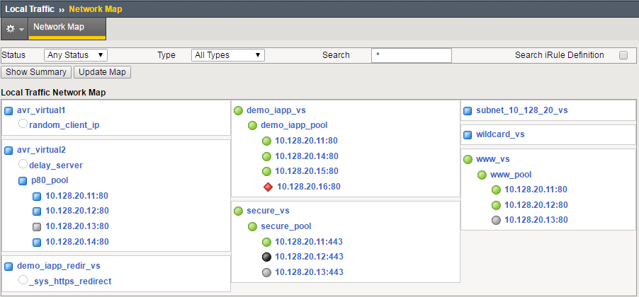
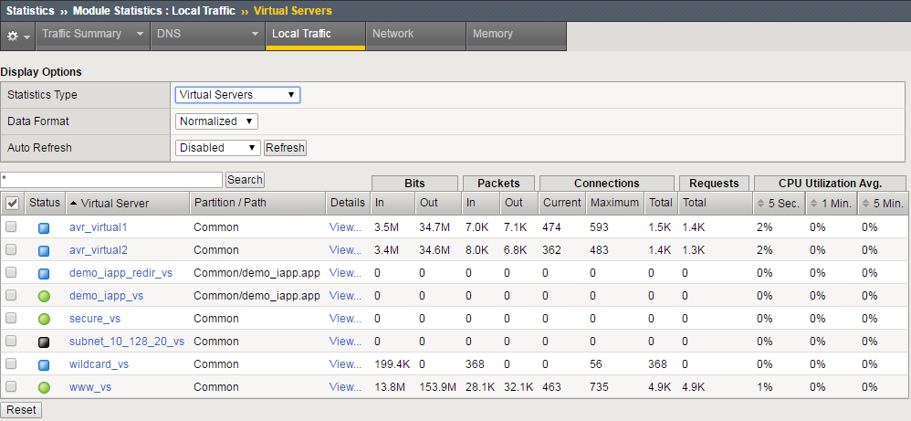
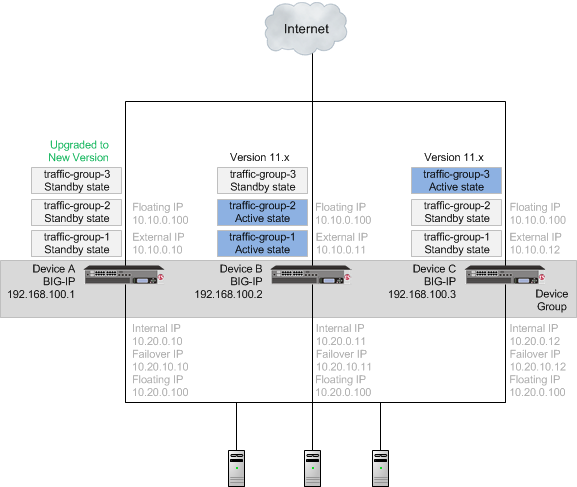
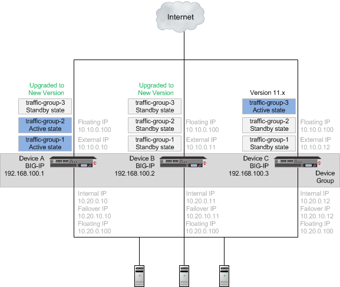
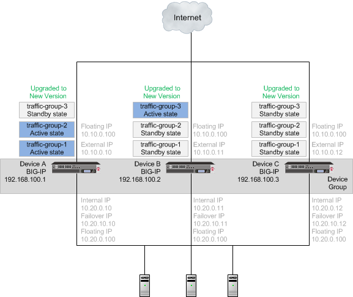
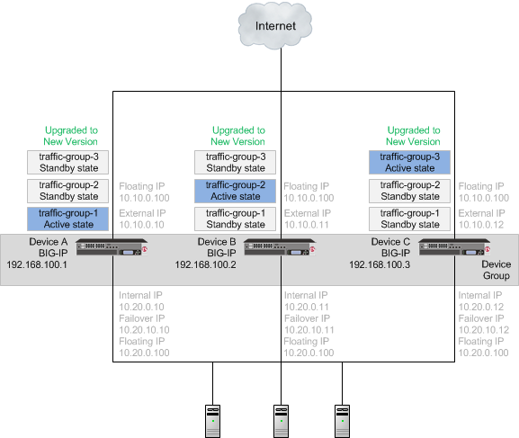

Unofficial - F5 Certification Exam Prep Material > F5 301B - BIG-IP LTM Specialist: Maintain and Troubleshoot Study Guide 11/01/19 Source | Edit on
F5 301b Introduction¶
F5 – 301b Local Traffic Manager Specialist Exam
The F5 BIG-IP Local Traffic Manager (LTM) increases an application’s operational efficiency and ensures peak network performance by providing a flexible, high-performance application delivery system. With its application-centric perspective, LTM optimizes your network infrastructure to deliver availability, security, and performance for critical business applications. Although the Exam Blueprint is not written in a structure that presents topics in an educational order, it does provide many of the necessary building blocks. The Certified LTM Training classes from F5 will help with many of the scenario-based topics on the test. An LTM Specialist must be proficient with all aspects of maintaining and troubleshooting the LTM within a network.
Traffic Management Shell
Although it is not mentioned in the blueprint as a requirement, a candidate should not focus only on the GUI interface for management of the LTM platform. Some test questions will refer to the command line interface (CLI) TMSH commands. You should take time to understand where in the CLI that common commands are issued so you can not only correctly answer the questions presented on the exam but also have enough knowledge of the CLI structure to eliminate bad commands from your question’s answer choices.
Try building your vLab environment from command line to gain CLI proficiency. Hands-on experience is the key to passing this exam.
Section 1 – Troubleshoot Basic Virtual Server Connectivity Issues¶
Objective - 1.01 - Given a scenario, determine the appropriate profile setting modifications¶
1.01 – Given a scenario of client or server side buffer issues, packet loss, or congestion, select the appropriate TCP or UDP profile to correct the issue
https://support.f5.com/csp/article/K13924148
Congestion Control
The default TCP Profile has the following settings related to congestion control.
| Setting | Default Value | Description |
| Appropriate Byte Counting (RFC 3465) | Enabled | This setting increases the congestion window by basing the increase amount on the number of previously-unacknowledged bytes that each ACK covers. |
| Congestion Metrics Cache | Enabled | This setting specifies that the system uses a cache for storing congestion metrics. |
| Congestion Control | High Speed | This setting specifies the congestion control mechanism that the BIG-IP system uses. Available options:
|
| Delay Window Control | Disabled | When enabled, this setting specifies that the system uses an estimate of queuing delay as a measure of congestion to control the amount of data sent (in addition to the normal loss-based control). |
| Explicit Congestion Notification | Disabled | When enabled, this setting specifies that the system uses the TCP flags CWR (Congestion Window Reduced) and ECE (ECN-Echo, used to indicate that the TCP peer is Explicit Congestion Notification capable during the three-way handshake) to notify its peer of congestion and congestion counter-measures. *Note: When this setting is enabled, it is used only when two hosts signal that they want to use it. This setting allows a host to set the ECN bit within the IP header to notify the transmitter that the link is congested.* |
| Initial Congestion Window Size | 0 MSS units | This setting specifies the initial congestion window size for connections to this destination. Actual window size is this value multiplied by the MSS for the same connection. The default value is 0 (zero), meaning that the system uses the values specified in RFC 2414. Valid values range from 0 to 16. |
| Packet Loss Ignore Burst | 0 packet count | This setting specifies the probability of performing congestion control when multiple packets are lost, even if the Packet Loss Ignore Rate value was not exceeded. Valid values range from 0 to 32. The default value is 0, meaning that the system performs congestion control if any packets are lost. Higher values decrease the chance of performing congestion control. |
| Packet Loss Ignore Rate | 0 packets lost per million | This setting specifies the threshold of packets lost per million at which the system performs congestion control. Valid values range from 0 to 1,000,000. The default value is 0, meaning the system performs congestion control if any packet loss occurs. If you set the ignore rate to 10 and packet loss for a TCP connection is greater than 10 per million, congestion control occurs. |
Rate Pace (11.5.0 and later) |
Disabled | The system paces the egress packets to avoid dropping packets, allowing for optimum goodput. This option mitigates bursty behavior in mobile networks. |
| Slow Start | Enabled | This setting specifies that the system uses larger initial window sizes, as specified in RFC 3390: Increasing TCP’s Initial Window, to help reduce round trip times. TCP slow-start congestion avoidance is a method of converging on the right amount of data to put on the link without overloading the link in order to prevent packets from being dropped. |
Timestamps Extension for High Performance (RFC 1323) (11.4.0 and later) |
Enabled | This setting specifies that the system uses the timestamp extensions for TCP, as specified in RFC 1323, to enhance high-speed network performance. The timestamp option allows for accurate RTT measurement, in addition to simplifying window calculations for the sender.
|
Virtual Server Layer4 Protocol Settings
The BIG-IP system provides a variety of Layer4 profiles that have been modified to optimize traffic processing for a number of popular network environments. Choosing an optimized TCP profile may greatly improve performance compared to using the default TCP profile.
Using optimized TCP profiles
https://support.f5.com/csp/article/K76314423
tcp-mobile-optimized
Introduced in BIG-IP 11.5.0, the tcp-mobile-optimized profile is a modified TCP protocol profile for use when the BIG-IP system is load balancing traffic from 3G and 4G cellular networks.
If you use a standard virtual server with a TCP profile to process strictly 3G and/or 4G cellular based traffic, you can configure your virtual server to use the tcp-mobile-optimized profile to enhance cell-based traffic processing. When the BIG-IP system proxies cellular traffic, client side connections to the virtual server are generally slower than the server side connections to pool members, resulting in a greater amount of data the BIG-IP must buffer. Increasing buffer sizes allows the BIG-IP system to accept more data and better manage the disparity in connection speeds also known as content spooling. For more information on content spooling, refer to K3422: Overview of content spooling. Additionally, the tcp-mobile-optimized profile increases the Initial Congestion Window size to reduce round trip times (RTT) and enables Nagle’s Algorithm to reduce the number of smaller TCP packets on the network.
Modified options in the tcp-mobile-optimized profile
The tcp-mobile-optimized profile contains the following modifications to the default TCP profile:
| Setting | Value | Description |
| Proxy Buffer Low | 131072 bytes | Specifies the proxy buffer level at which the receive window was opened. This value is increased to accommodate larger bandwidth links and content spooling that may occur. |
| Proxy Buffer High | 131072 bytes | Specifies the proxy buffer level at which the receive window is no longer advanced. This value is increased to accommodate larger bandwidth links and content spooling that may occur. |
| Send Buffer | 131072 bytes | Specifies the BIG-IP system’s send buffer size in bytes. This value is increased to allow the BIG-IP to send more data. |
| Receive Window | 131072 bytes | Specifies the BIG-IP system’s receive window size in bytes. This value is increased to allow the BIG-IP to receive more data. |
| Reset on Timeout | Disabled | Specifies that the system sends a reset packet (RST) in addition to deleting the connection, when a connection exceeds the idle timeout value. |
| Delayed ACKs | Disabled | Specifies if the BIG-IP system can send fewer than one ACK (acknowledgment) packet per data packet received. Enabling Delayed ACK and Nagle’s Algorithm may cause latency when single small packets are sent or received. |
| Appropriate Byte Counting (ABC) | Disabled | Specifies if the BIG-IP system increases the congestion window by basing the increase amount on the number of previously unacknowledged bytes that each ACK covers. Disabled as ABC may not perform optimally when applications send small amounts of data. |
| Initial Congestion Window Size | 16 | Specifies the initial congestion window size for connections to this destination. Actual window size is this value multiplied by the MSS (Maximum Segment Size) for the same connection. Larger initial congestion windows may improve performance of TCP connections over satellite channels. |
| Explicit Congestion Notification (ECN) | Enabled | Specifies that the BIG-IP system uses the TCP flags Congestion Window Reduced (CWR) and ECN-Echo (ECE) to notify peers of impending congestion. Instead of dropping packets an ECN-aware peer will reduce the packet transmission rate. |
| Nagle’s Algorithm | Enabled | Specifies that the BIG-IP system uses Nagle’s algorithm to reduce the number of short segments on the network by holding data until the peer system acknowledges outstanding segments. This helps to reduce congestion by creating fewer packets on the network. |
https://support.f5.com/csp/article/K7405
tcp-wan-optimized
The tcp-wan-optimized profile is a pre-configured profile type. In cases where the BIG-IP system is load balancing traffic over a WAN link, you can enhance the performance of your wide-area TCP traffic by using the tcp-wan-optimized profile.
If the traffic profile is strictly WAN-based, and a standard virtual server with a TCP profile is required, you can configure your virtual server to use the tcp-wan-optimized profile to enhance WAN-based traffic. For example, in many cases, the client connects to the BIG-IP virtual server over a WAN link, which is generally slower than the connection between the BIG-IP system and the pool member servers. As a result, the BIG-IP system can accept the data more quickly, allowing resources on the pool member servers to remain available. By configuring your virtual server to use the tcp-wan-optimized profile, you can increase the amount of data the BIG-IP system will buffer while waiting for a remote client to accept it. Additionally, you can increase network throughput by reducing the number of short TCP segments the BIG-IP system sends on the network.
Optimized settings and definitions in the tcp-wan-optimized profile
The following table describes settings of the tcp-wan-optimized profile that may differ from the parent default TCP profile in order to optimize WAN traffic.
| Setting | Value | Description |
| Proxy Buffer Low | 131072 | This setting specifies the proxy buffer level at which the receive window was opened. For more information, refer to K3422: Overview of content spooling. |
| Proxy Buffer High | 131072 | This setting specifies the proxy buffer level at which the receive window is no longer advanced. For more information, refer to K3422: Overview of content spooling. |
| Send Buffer | 65535 | This setting causes the BIG-IP system to send the buffer size in bytes. To optimize LAN-based traffic, this setting should be at least 64 K in order to allow the BIG-IP system to output more data at a time, if it is allowed by the congestion window. |
| Receive Window | 65535 | This setting causes the BIG-IP system to receive the window size in bytes. If this setting is set too low in a LAN environment it can cause delays, as some systems inhibit data transfers if the receive window is too small. |
| Selective ACKs | Enabled | When this setting is enabled, the BIG-IP system can inform the data sender about all segments that it has received, allowing the sender to retransmit only the segments that have been lost. |
| Nagle’s Algorithm | Enabled | When this setting is enabled, the BIG-IP system applies Nagle’s algorithm to reduce the number of short segments on the network by holding data until the peer system acknowledges outstanding segments. |
To display all tcp-wan-optimized profile settings and values for your specific version, you can use the following Traffic Management Shell (tmsh) command:
tmsh list ltm profile tcp tcp-wan-optimized all-properties
https://support.f5.com/csp/article/K7406
tcp-lan-optimized
The tcp-lan-optimized profile is a preconfigured profile type that can be associated with a virtual server. In cases where the BIG-IP virtual server is load balancing LAN-based or interactive traffic, you can enhance the performance of your local-area TCP traffic by using the tcp-lan-optimized profile.
If the traffic profile is strictly LAN-based, or highly interactive, and a standard virtual server with a TCP profile is required, you can configure your virtual server to use the tcp-lan-optimized profile to enhance LAN-based or interactive traffic. For example, applications producing an interactive TCP data flow such as secure shell (SSH) and TELNET, normally generate a TCP packet for each keystroke. A TCP profile setting such as Slow Start or Nagle’s Algorithm can introduce latency when this type of traffic is being processed. By configuring your virtual server to use the tcp-lan-optimized profile, you can ensure that LAN-based or interactive traffic is delivered without delay.
Settings and definitions in the tcp-lan-optimized profile
The following table describes settings of the tcp-lan-optimized profile that may differ from the parent default TCP profile in order to optimize LAN traffic.
| Setting | Value | Description |
| Proxy Buffer Low | 98304 | This setting specifies the proxy buffer level at which the receive window was opened. For more information, refer to K3422: Overview of content spooling. |
| Proxy Buffer High | 131072 | This setting specifies the proxy buffer level at which the receive window is no longer advanced. For more information, refer to K3422: Overview of content spooling. |
| Send Buffer | 65535 | This setting causes the BIG-IP system to send the buffer size in bytes. To optimize LAN-based traffic, this setting should be at least 64K in order to allow the BIG-IP system to output more data at a time, if allowed by the congestion window. |
| Receive Window | 65535 | This setting causes the BIG-IP system to receive the window size in bytes. If this setting is set too low in a LAN environment it can cause delays, as some systems inhibit data transfers if the receive window is too small. |
| Slow Start | Disabled | When enabled (selected), this setting specifies that the system uses larger initial window sizes (as specified in Internet Engineering Task Force (RFC 3390)) to help reduce round trip times. |
| Bandwidth Delay | Disabled | When this setting is enabled, the system attempts to calculate the optimal bandwidth to use to the client, based on throughput and round-trip time, without exceeding the available bandwidth. This setting should be disabled in the following cases: the traffic profile is interactive; the client exhibits stretch ACKs; or the acknowledgment packets cover more than two segments of previously unacknowledged data. Note: This setting is deprecated and no longer appears in BIG-IP 11.2.1 and later versions. |
| Nagle’s Algorithm | Disabled | When this setting is enabled, the BIG-IP system applies Nagle’s algorithm to reduce the number of short segments on the network by holding data until the peer system acknowledges outstanding segments. |
| Acknowledge on Push | Enabled | When this setting is enabled it improves performance to Windows and MacOS peers who produce a small send buffer. |
https://support.f5.com/csp/article/K7535
UDP
Even though UDP is a connectionless protocol, the F5 BIG-IP is a full proxy device and can accept the UDP traffic and will keep an inbound connection in the state table. The most important setting in the UDP profile for network performance issues is the idle timeout setting.
Settings and definitions in the UDP profile are defined in the following table:
| Setting | Default value | Description |
| Proxy Maximum Segment | Disabled (Not Selected) | When enabled, this setting specifies that the system advertises the same maximum segment size (MSS) to the server as that of the client. This option is available in BIG-IP LTM 11.0.0 and later. |
| Idle Timeout | Specify: 60 seconds | This setting specifies the length of time that a connection is idle before the connection is eligible for deletion. The Idle Timeout setting allows the BIG-IP LTM to create a connection entry. UDP is a connectionless protocol and does not behave in the same manner as TCP. By default, the BIG-IP LTM treats UDP packets from the same source and port as part of a connection. Available options:
Note: Specifying an indefinite idle timeout for connectionless protocols such as UDP can lead to stalled connections and resource shortages. |
| IP ToS | 0 | This setting specifies the Layer 3 (L3) Type of Service (ToS) level that the system inserts in the UDP datagrams destined for clients. The IP ToS is part of the TCP/IP protocol and is primarily used for ToS Application Routing, which is supported by OSPF and IS-IS. It allows the administrator to specify the importance and routing preference the packet should be given on a supported network. For more information regarding ToS Precedence values and a description of ToS Application Routing, refer to the following RFC’s:
|
| Link QoS | 0 | This setting specifies the Layer 2 (L2) Quality of Service (QoS) level that the system inserts in the TCP packets destined for clients. The Link QoS is used to specify the QoS level that the system assigns to the UDP datagrams when sending to a client. These values are similar to IP ToS, but are applied to the link layer or L2. For more information regarding QoS, refer to the following RFCs:
|
| Datagram LB | Disabled (Not Selected) | The Datagram LB option, which is disabled by default, specifies that the system load balances UDP traffic packet-by-packet and does not treat UDP packets from the same source and port as part of a connection. This setting overrides the default behavior of the UDP profile. |
| Allow No Payload | Disabled (Not Selected) | Allows UDP datagrams that have no payload (Contains only the UDP header) through the system. |
| TTL Mode1 | Proxy | This setting specifies the outgoing UDP packet’s Time-to-live (TTL) mode. Available options:
*Note: The Set value is available in 12.1.0 and later.* |
| Don’t Fragment Mode2 | PMTU | This setting controls the Don’t Fragment (DF) bit in the outgoing UDP packet. Available options:
*Note: In PMTU, the TM.PathMTUDiscovery database variable controls the PMTU setting.* |
| Max Buffer Bytes3 | 655350 (bytes) | This setting specifies ingress buffer byte limit. Maximum allowed value is 16777215. This option is available in BIG-IP LTM 13.0.0 and later. |
| Max Buffer Packets3 | 0 | This setting specifies ingress buffer packet limit. Maximum allowed value is 255. |
1.01 – Given a scenario determine when an application would benefit from HTTP Compression and/or Web Acceleration profile
Compression
Even though the internet speed is increasing, there are users that still have slow internet access and adding compression to a website can speed up performance for them. The BIG-IP can provide simple Compression or Caching of data that can help with this need.
https://support.f5.com/csp/article/K15434
When you configure an HTTP Compression profile and assign it to a virtual server, the BIG-IP system reads the Accept-Encoding header of a client request and determines what content encoding method the client prefers. The BIG-IP system then removes the Accept-Encoding header from the request and passes the request to the server. Upon receiving the server response, the BIG-IP system inserts the Content-Encoding header, specifying either the gzip or deflate, based on the compression method that the client specifies in the Accept-Encoding header.
Note: Compression of data can cause latency so tuning may be necessary to find the best configuration for each environment.
Web Acceleration profile
https://support.f5.com/csp/article/K14903
The Web Acceleration profile provides settings to configure HTTP caching for the BIG-IP system. HTTP caching allows the BIG-IP system to store frequently requested web objects in memory for reuse by subsequent connections.
You can enable HTTP caching on the BIG-IP system by associating a Web Acceleration profile with a virtual server. An HTTP cache is a collection of HTTP objects stored in the BIG-IP system’s memory that subsequent connections can reuse to reduce traffic load on the origin web servers. The goal of caching is to reduce the need to send frequent requests for the same object and eliminate the need to send full responses in many cases.
Cacheable content
You can configure the BIG-IP cache feature to cache the following content types:
- 200, 203, 300, 301, and 410 HTTP responses
- Responses to HTTP GET requests
- Other HTTP methods for URIs specified for inclusion in cached content, or specified in an iRule
- Content based on the User-Agent and Accept-Encoding values. The cache feature holds different content for Vary headers.
The default cache configuration caches only responses to HTTP GET requests. However, you can configure the Web Acceleration profile to cache other requests, including non-HTTP requests. To do this, you can specify a URI in the URI Include Override List or Pin List within a Web Acceleration profile, or write an iRule.
Non-cacheable content
The cache feature does not cache the following items:
- Data specified by the following Cache-Control headers: private, no-store, no-cache
- Action-oriented HTTP methods such as HEAD, PUT, DELETE, TRACE, and CONNECT
Recommendations
When you configure the Web Acceleration profile for a virtual server, you should consider the following factors:
- Caching is useful for frequently-requested content; for example, caching can be used if the site has periods of high demand for specific content. When you configure a Web Acceleration profile for a virtual server, the content server only has to serve the content to the BIG-IP system once per expiration period.
- Caching is useful if a site contains a large amount of static content such as CSS files, JavaScript files, or images.
- For compressible data, the cache feature can store data for clients that accept compressed data. When used with the compression feature on the BIG-IP system, the cache takes stress off of the BIG-IP system and the content servers.
Objective - 1.02 - Given a sub-set of an LTM configuration, determine which objects to remove or consolidate to simplify the LTM configuration¶
1.02 - Evaluate which iRules can be replaced with a profile or policy setting
https://support.f5.com/csp/article/K15085
Interpret Configuration
The Local Traffic Policies comprise a prioritized list of rules that match defined conditions and run specific actions, which you can assign to a virtual server that directs traffic accordingly. For example, you might create a policy that determines whether a client’s browser is a Chrome browser and adds an Alternative-Protocols attribute to the header, so that subsequent requests from the Chrome browser are directed to a SPDY virtual server. Or you might create a policy that determines whether a client is using a mobile device, and then redirects its requests to the applicable mobile web site’s URL.
https://devcentral.f5.com/articles/ltm-policy
iRules are an important and long-standing part of the BIG-IP architecture, and pervasive throughout the product. There is some overlap between what can be controlled by LTM Policy and iRules, not surprisingly that most of the overlap is in the realm of HTTP traffic handling. And just about anything that is possible in LTM Policy can also be written as an iRule.
LTM Policy is a structured, data-driven collection of rules. iRules and Tcl are more of a general purpose programming language which provide lots of power and flexibility, but also require some programming skills. Because policies are structured and can be created by populating tables in a web UI, it is more approachable for those with limited programming skills.
So, when to use LTM Policy and when to use iRules? As a general rule, where there is identical functionality, LTM Policy should be able to offer better performance. There are situations where LTM Policy may be a better choice.
- when rules need to span different events, (e.g. a rule that considers both request and response)
- dealing with HTTP headers and cookies (e.g. LTM Policy has more direct access to internal HTTP state)
- when there are large number of conditions (pre-compiled internal decision trees can evaluate conditions in parallel)
- when conditions have a lot of commonality
For supported events (such as HTTP_REQUEST or HTTP_RESPONSE), LTM Policy evaluation occurs before iRule evaluation. This means that it is possible to write an iRule to override an LTM Policy decision.
1.02 - Evaluate which host virtual servers would be better consolidated into a network virtual server
https://support.f5.com/kb/en-us/products/big-ip_ltm/manuals/product/ltm-concepts-11-5-0/2.html
Host Virtual Server
A host virtual server represents a specific site, such as an Internet web site or an FTP site, and it load balances traffic targeted to content servers that are members of a pool.
The IP address that you assign to a host virtual server should match the IP address that Domain Name System (DNS) associates with the site’s domain name. When the BIG-IP system receives a connection request for that site, Local Traffic Manager recognizes that the client’s destination IP address matches the IP address of the virtual server, and subsequently forwards the client request to one of the content servers that the virtual server load balances.
Network Virtual Server
A network virtual server is a virtual server whose IP address has no bits set in the host portion of the IP address (that is, the host portion of its IP address is 0). There are two kinds of network virtual servers: those that direct client traffic based on a range of destination IP addresses, and those that direct client traffic based on specific destination IP addresses that the BIG-IP system does not recognize.
When you have a range of destination IP addresses
With an IP address whose host bit is set to 0, a virtual server can direct client connections that are destined for an entire range of IP addresses, rather than for a single destination IP address (as is the case for a host virtual server). Thus, when any client connection targets a destination IP address that is in the network specified by the virtual server IP address, Local Traffic Manager (LTM) can direct that connection to one or more pools associated with the network virtual server.
For example, the virtual server can direct client traffic that is destined for any of the nodes on the 192.168.1.0 network to a specific load balancing pool such as ingress-firewalls. Or, a virtual server could direct a web connection destined to any address within the subnet 192.168.1.0/24, to the pool default_webservers.
Objective - 1.03 - Given a set of LTM device statistics, determine which objects to remove or consolidate to simplify the LTM configuration¶
1.03 - Identify redundant and/or unused objects
https://support.f5.com/csp/article/K15335
Orphaned Configuration Objects
Over the course of a system’s operation, various configuration objects may become orphaned as they are created and then abandoned to accommodate changing business or application needs.
While orphaned configuration objects do not initially cause problems, if allowed to accumulate, you can eventually encounter some of the following issues:
Performance degradation when saving or loading the configuration.
Increased memory and CPU utilization from monitoring unused pools and pool members.
Note: CPU utilization is increased when monitors repeatedly mark pool members or nodes down.
Hindered administration from unnecessarily large configurations that can result in configuration conflicts such as IP address or object name conflicts.
1.03 - Identify unnecessary monitoring
Simple Monitoring
Simple monitoring determines whether the status of a resource is up or down. The system contains three simple monitors, Gateway ICMP, ICMP, and TCP_ECHO.
Simple monitors work well when you only need to determine the up or down status of the following:
- A Local Traffic Manager node
- A Global Traffic Manager or Link Controller server, virtual server, pool, pool member, or link
Active Monitoring
Active monitoring checks the status of a pool member or node on an ongoing basis as specified. If a pool member or node does not respond within a specified timeout period, or the status of a node indicates that performance is degraded, the BIG-IP system can redirect the traffic to another pool member or node. There are many active monitors. Each active monitor checks the status of a particular protocol, service, or application. For example, one active monitor is HTTP. An HTTP monitor allows you to monitor the availability of the HTTP service on a pool, pool member, or node. A WMI monitor allows you to monitor the performance of a node that is running the Windows Management Instrumentation (WMI) software. Active monitors fall into two categories: Extended Content Verification (ECV) monitors for content checks, and Extended Application Verification (EAV) monitors for service checks, path checks, and application checks.
An active monitor can check for specific responses and run with or without client traffic.
Note: An active monitor also creates additional network traffic beyond the client request and server response and can be slow to mark a pool member as down.
Passive monitoring
Passive monitoring occurs as part of a client request. This kind of monitoring checks the health of a pool member based on a specified number of connection attempts or data request attempts that occur within a specified time period. If, after the specified number of attempts within the defined interval, the system cannot connect to the server or receive a response, or if the system receives a bad response, the system marks the pool member as down. There is only one passive monitor, called an Inband monitor.
A passive monitor creates no additional network traffic beyond the client request and server response. It can mark a pool member as down quickly, as long as there is some amount of network traffic.
Note: A passive monitor cannot check for specific responses and can potentially be slow to mark a pool member as up.
Unnecessary Monitoring
Monitors can be layered (meaning more than one monitor on a configuration object) and assigned to different configuration objects that makeup or represent an application. If you are checking the state of a web application with an HTTP monitor on the Pool member and it is working, it may be redundant to check the node with ICMP. It is logical that if you can get a response back from the server at the application level you don’t need to ping the server that is sending you the HTTP response to know if it is up.
Example: If there is an HTTP monitor assigned to the Pool Member and it is working, then assigning a TCP monitor checking port 80 on that Pool Member is redundant.
1.03 - Interpret configuration and performance statistics
Interpreting configuration and performance statistics
It can be difficult when looking for configuration objects that are no longer used in a BIG-IP configuration. One way to confirm if a configuration object is actively being used is to look in the network map and see all of the object on the map and where they are assigned.
You can also look in Statistics/Module Statistics/Local Traffic and look at the objects in the lists to see if they are actively receiving traffic.
1.03 - Explain the effect of removing functions from the LTM device configuration
https://support.f5.com/csp/article/K15335
Configuration removal
F5 recommends that you periodically audit your configuration for any orphaned objects that can be removed from the configuration.
Impact of recommendation: You should not delete any objects until a thorough configuration review is performed to ensure the configuration object to be deleted is not referenced by another configuration object. Additionally, you should save a backup of your configuration before deleting any objects.
For example, you should review your configuration for any orphaned configuration objects similar to the following:
- Virtual server that has no pools, httpclass, policy, or iRules attached to it, and is not a Reject or Forwarding type (Layer 2 or IP), or referenced by an iRule.
- Custom policy that is not attached to any virtual server or referenced by any iRule. (11.4.0 and later)
- Custom httpclass that is not attached to any virtual server or referenced by any iRule. (11.0.0 - 11.3.0)
- Custom profile that is not attached to any virtual server.
- Custom iRule that is not attached to any virtual server.
- Pool that is not attached to any virtual server, route, httpclass, policy, or referenced by any iRule.
- Node that is not a member of any pool, not attached to any policy, and is not referenced by any iRule.
- Custom monitor that is not attached to any pool or node, and is not the Node Default Monitor.
You can use the BIG-IP iHealth website to monitor the health and proper operation of your BIG-IP system. Additionally, BIG-IP iHealth can discover and report a number of orphaned objects. After uploading your qkview file, click Config Explorer on the left of the iHealth page and search for the Unassigned Objects entry. The number of orphaned objects will be listed and can be viewed by clicking the down arrow on the far right.
Objective - 1.04 - Given a scenario, determine the appropriate upgrade and recovery steps required to restore functionality to LTM devices¶
1.04 - Identify the appropriate methods for a clean install
https://support.f5.com/csp/article/K13117
Clean Install
On rare occasions, you may be required to perform a clean installation of BIG-IP 11.x through 14.x. During a clean installation, you wipe all mass-storage devices, thereby restoring the BIG-IP or Enterprise Manager system to its factory defaults.
If your device is no longer able to boot from any of the defined boot locations, you need to perform the clean installation using one of the following methods.
- Install the software using an installation image saved on the system
- Install the software using a USB DVD or USB thumb drive
- Install the software using a PXE server
1.04 - Identify the TMSH sys software install options required to install a new version
https://support.f5.com/kb/en-us/products/big-ip_ltm/manuals/product/bigip-tmsh-11-5-0.html
sys software module
You can use the image component to install images onto a volume, view information about available images, or delete unwanted images.
Before you begin installing an image, you must download the image file into the /shared/images directory. You can find new software images at http://downloads.f5.com. We recommend downloading both the .iso file and the .md5 file. Download the file (or files) to your local machine, then transfer it to the /shared/images directory on the BIG-IP. Use the Manager (GUI) interface to make this transfer, or quit tmsh to the Unix command line and use scp or a similar Unix command.
If you downloaded the .md5 file, you can use the Unix md5sum command to check the MD5 hash of the .iso file, and you can compare it to the contents of the .md5 file. They should match. If they do not, retry the download and/or transfer of the .iso file.
From tmsh, you can use show sys software status to see all of the available disk volumes where you can install the .iso file. You can install the .iso file in any volume that is not active.
Then use the install command with this component to install the .iso file to an unused volume. You can use the create-volume option if you want to create a new volume. The installation takes some time; you can use show sys software status repetitively to watch the progress of the installation. To put the .iso file into active service, use the reboot option in the install command, or use the reboot volume vol-name command after the install command completes.
Confirming an Image Installation
You can use show sys version to confirm that the system is running the new software version. If this is a new module for the current system, you may need to use show sys license and/or install sys license to update your license. For a new module, you may also need to provision CPU, memory, and disk space for the module with the sys provision component.
Examples:
install image BIGIP-10.0.0.5376.0.iso volume HD1.1 reboot
Attempts to install the specified image, BIGIP-10.0.0.5376.0.iso, onto HD1.1. Note: If the installation is successful, the machine reboots into the newly installed image.
list image BIGIP-10.0.0.5376.0.iso
Displays information about the specified image, build 5376.0 of BIG-IP version 10.0.0.
list image */1
Displays information about all of the images located on the first slot.
Command Options:
- build
Displays the build number of the image.
- build-date
Displays the date on which the image was built.
- checksum
Displays the checksum of the image. You can use this option to verify the integrity of the image.
- create-volume
Creates a new volume using the name specified with the volume option. Mirrored volume names must begin with the prefix MD1.. Mirrored volumes are available only on systems that support RAID, see sys raid.
- file-size
Displays the size of the image file in megabytes.
- glob
Displays the items that match the glob expression. See help glob for a description of glob expression syntax.
- last-modified
Displays the date the file was last modified.
- name
Specifies the name of the image that you want to install or delete.
- product
Displays the F5 product the image contains.
- reboot
Specifies that the system reboots immediately after a successful installation.
- regex
Displays the items that match the regular expression. The regular expression must be preceded by an at sign (@[regular expression]) to indicate that the identifier is a regular expression. See help regex for a description of regular expression syntax.
- verified
When set to yes, indicates that the image is authentic.
- version
Displays the version number of the product this image contains.
- volume
Specifies the name of the volume on which you want to install the image, or from which you want to delete the image.
https://support.f5.com/kb/en-us/solutions/public/14000/000/sol14088.html
Installing A Software Image
Installing a software image, point release, or hotfix
Once the software image, point release, or hotfix is imported, you can install it on a boot location. When installing to a new boot location, the new boot location is created when performing the software installation.
Note: You can install a software image over an existing software image, provided the boot location is not active.
Impact of procedure: Performing the following procedure should not have a negative impact on your system.
Using tmsh
Log in to tmsh by typing the following command:
tmsh
To install a software image, point release, or software hotfix, use the following command syntax:
install /sys software <hotfix | image> <software>.iso volume <volume_number>For example, to install BIG-IP 12.0.0 to new volume HD1.5, type the following command:
install /sys software image BIGIP-12.0.0.0.0.606.iso volume HD1.5 create-volume
Note
You can use tab completion in tmsh. To see the available images for installation, press the Tab key after you type the install sys software image command.
To verify the software installation progress, type the following command:
show /sys software status
The command output appears similar to the following example:
--------------------------------------------------- Sys::Software Status Volume Product Version Build Active Status --------------------------------------------------- HD1.1 BIG-IP 10.2.4 577.0 no complete HD1.2 BIG-IP 11.5.2 0.0.141 no complete HD1.3 BIG-IP 11.5.3 0.0.163 no complete HD1.4 BIG-IP 12.0.0 0.0.606 yes complete HD1.5 BIG-IP 12.0.0 0.0.606 no installing 10.000 pct
1.04 - Identify the steps required to upgrade the LTM device such as: license renewal, validation of upgrade path, review release notes, etc.
https://support.f5.com/csp/article/K84554955#prepare
Upgrade
Preparing for a software upgrade
Before you perform your software upgrade, F5 recommends that you make the following preparations:
When you have planned the date for the upgrade, you have the option to open a proactive service request to reduce the time needed to speak with a Support Engineer, should you encounter any technical issues during the upgrade procedure. For more information, refer to K16022: Opening a proactive service request with F5 Technical Support.
Note: If you want F5 to provide full planning assistance during your upgrade, you can contact Professional Services. F5 Technical Support will answer specific questions regarding your upgrade but cannot provide start-to-finish upgrade assistance. For more information, refer to Scope of Support.
Confirm your running BIG-IP software version using the TMOS Shell (tmsh) show /sys software status command. Note the Volume name in case you decide to boot a previous version at a later time (HD1.1 in the below example).
For example, the command and output on a system running BIG-IP 12.1.2 appears similar to the following example:
tmsh show /sys software status Sys::Software Status Volume Product Version Build Active Status HD1.1 BIG-IP 12.1.2 0.0.249 yes complete
For BIG-IP 10.x systems, confirm that you are using the volume’s disk-formatting scheme. For more information, refer to the following two articles:
Check the integrity of the running configuration. For BIG-IP 11.x and later use the tmsh load /sys config verify command. For BIG-IP 10.x and earlier, use bigpipe verify load. The system should not return any errors.
Note: Warnings may not hinder a software upgrade but if possible, you should correct them before you proceed with the upgrade.
Reactivate the system license. For more information, refer to K7727: License activation may be required prior to a software upgrade for the BIG-IP or Enterprise Manager system.
Verify that the BIG-IP device certificate has not expired. For more information, refer to K6353: Updating an SSL device certificate on a BIG-IP system.
For high availability (HA) BIG-IP systems, verify that all systems in the device group are in sync. For more information, refer to K13920: Performing a ConfigSync using the Configuration utility.
Note your local admin and root user passwords in case you need them for troubleshooting.
Generate a qkview diagnostics file and upload to BIG-IP iHealth to look for any triggered upgrade-related heuristics in the Diagnostics and Upgrade Advisor tabs. For more information about:
- Qkview diagnostics, refer to K12878: Generating diagnostic data using the qkview utility.
- BIG-IP iHealth, refer to the BIG-IP iHealth User Guide.
Create a user configuration set (UCS) archive of the BIG-IP configuration and save it to a secure remote location in case it is needed for recovery purposes. Retain a UCS archive from every BIG-IP system in your network on a remote file store to aid disaster recovery. Even if the archive has aged and does not contain all configuration objects, it will provide faster recovery time than if you completely reconfigure the BIG-IP system. For more archive information, refer to the following articles:
K2880: Configuring a replacement BIG-IP device after a Return Materials Authorization
K13551: Configuring a replacement BIG-IP device after an RMA when no UCS archive is available
Beginning in 11.6.3, 12.1.3, and 13.1.0, BIG-IP software no longer uses cumulative hotfixes. Product defects and security fixes are now included in a full release referred to as a point release. Point releases are identified by a fourth version element. If you intend to install these BIG-IP versions or later versions, you should download the point release that you plan to install from the F5 Downloads site. If you intend to install versions that support hotfixes, you should download the base BIG-IP version that you plan to install from the F5 Downloads site, including the latest hotfix, if available. For more information, refer to K167: Downloading software and firmware from F5.
Verify the integrity of the downloaded software images using the MD5 checksum utility. For more information, refer to K8337: Verifying the MD5 checksum for the downloaded F5 software file.
1.04 - Identify how to copy a config to a previously installed boot location or slot
https://support.f5.com/csp/article/K14724
Copying config to different boot location
The cpcfg command allows you to copy a configuration from a specified source boot location to another specified target boot location. The cpcfg command uses the following syntax:
cpcfg <options> <destination_location>
You can use the options in the following table to add functionality to the cpcfg command.
| Option syntax | Function |
|---|---|
| –source = SLOT | Get configuration from specified slot (for example: HD1.1) |
| –verbose | Increase verbose level (cumulative) |
| –reboot | Immediately switch to target location after transferring configuration |
Note: The —reboot option is available only in BIG-IP 10.2.4 and BIG-IP 11.2.0 and later.
The cpcfg command has the following restrictions:
The BIG-IP version of the target boot location must be the same or later than the version of the source boot location.
If the specified target boot location is an earlier version than the source boot location, the command fails with an error message similar to the following example:
info: New version (11.4.0) is not >= originating version (11.4.1); configuration is not compatible.
configuration roll-forward desired but not compatible.
You cannot specify the currently-active boot location as the target boot location.
If the specified target boot location is the active boot location, the command fails with an error message similar to the following example:
Copy to active location (HD1.6) is not supported.
On VIPRION systems, you must run the cpcfg command with the cluster shell (clsh) command on the primary blade.
If you omit the –source=SLOT option from the command, the system uses the currently active boot location as the source configuration.
Prerequisites
You must meet the following prerequisites to use these procedures:
- You must have command line access on the BIG-IP system.
- The BIG-IP system must have multiple boot locations (volumes).
Procedures
Copying a configuration from one boot location to another
You can use the cpcfg command to copy the configuration from one boot location to another boot location. To do so, perform the following procedure:
Impact of procedure: The system overwrites the configuration on the specified target boot location with the configuration of the specified source boot location.
Log in to the BIG-IP command line.
Display the available boot locations by typing the following command:
tmsh show sys software
The command output appears similar to the following example:
-------------------------------------------------- Sys::Software Status Volume Product Version Build Active Status -------------------------------------------------- HD1.1 BIG-IP 10.2.4 577.0 no complete HD1.2 BIG-IP 11.3.0 2806.0 yes complete HD1.3 BIG-IP 11.4.0 2384.0 no complete
Copy the configuration from the source boot location to the target boot location using the following command syntax:
cpcfg --source=SLOT <destination_location>For example, to copy the configuration from boot location HD1.2 (11.3.0) to boot location HD1.3 (11.4.0) you would type the following command:
cpcfg --source=HD1.2 HD1.3On a VIPRION system, ensure that each blade receives the updated configuration by running the cpcfg command with the cluster shell (clsh) utility on the primary blade.
For example:
clsh cpcfg --source=HD1.2 HD1.3
1.04 - Identify valid rollback steps for a given upgrade scenario
Rollback installation
The upgrade process will only install the new version of software to a new volume and then copy the config forward from the current running boot location. Since Big-IP forces you to install to a software volume which is not currently in-use, you are able to boot back to the original volume should there be a problem.
https://support.f5.com/csp/article/K84554955#backout
Backing out your software upgrade
If a BIG-IP system fails to upgrade and you cannot perform further troubleshooting due to time constraints, complete the following steps before reverting to the previous BIG-IP version.
Note: If you do not perform troubleshooting before reverting changes, it may be difficult to determine a root cause for failure. If possible, contact F5 Technical Support while the issue is occurring so you can perform relevant data gathering, such as creating a fresh qkview file.
Gathering troubleshooting information
- To determine what may be causing the configuration load error, run the tmsh load /sys config command.
- Create a qkview file.
Using the Configuration utility to reboot
- Log in to the Configuration utility with administrative privileges.
- Navigate to System > Software Management > Boot Locations.
- Click the Boot Location for the previous software version.
- Click Activate.
- To close the confirmation message, click OK.
Rebooting from the command line
Log in to the command line.
To reboot to the previous software version, use the following command syntax:
tmsh reboot volume <volume name>
For example, to reboot to volume HD1.1, type the following command:
tmsh reboot volume HD1.1
note:: The previously described backout procedures do not apply if you have already reset the BIG-IP system to its default settings.
Objective - 1.05 - Given a scenario, determine the appropriate upgrade steps required to minimize application outages¶
1.05 - Explain how to upgrade an LTM device from the GUI
https://support.f5.com/csp/article/K84554955#upgrade
Performing a software upgrade on a BIG-IP system
Impact of procedure: You can upgrade the active BIG-IP system in an HA configuration before you reboot into the new software volume. However, if the BIG-IP system serves high volume traffic, you can perform the upgrade during a maintenance window to lessen the impact on a busy system. Optionally, you can perform the upgrade on the standby systems in an HA configuration before the maintenance window to shorten the required duration of the maintenance window.
Note: Ensure that your system is already booted into the software volume that contains the configuration you are planning to upgrade. If the system is not already booted into that volume, reboot your system to that software volume before you begin the following procedure.
Log in to the Configuration utility with administrative privileges.
To upload the necessary ISO files, navigate to System > Software Management.
Click Import.
Click Browse to select the file to upload from your local computer.
Click Import.
Notes:
- Alternatively, you can use the Secure Copy (SCP) protocol from a remote device to transfer images to the /shared/images/ directory on the BIG-IP. For more information, refer to K175: Transferring files to or from an F5 system.
- Images automatically appear in the Configuration utility when the system completes the upload and verifies the internal checksum.
If you are installing a point release, navigate to System > Software Management > Image list. If you are installing a hotfix, navigate to System > Software Management > Hotfix list.
Note: The BIG-IP system automatically installs the base image before installing the hotfix to the new software volume.
Select the box next to the point release image or the hotfix image you want to install.
Click Install.
Select an available disk from the Select Disk menu.
Select an empty volume set from the Volume Set Name menu, or type a new volume set name.
Note: You can use any combination of lowercase alphanumeric characters (a-z, 0-9) and the hyphen character. The volume set name can be from 1 to 32 characters in length but cannot be only one 0 (zero) character (for example HD1.0 or MD1.0). For instance, if the HD1 disk is active and you type Development into Volume set name, the system creates a volume set named HD1.Development and installs the specified software to the new volume set.
Click Install.
Note: If the string you type does not match an existing volume set, the system creates the volume set and installs the software.
To see the installation progress, view the Install Status column of the Installed Images section of the page.
1.05 - Describe the effect of performing an upgrade in an environment with device groups and traffic groups
Upgrade of device groups and traffic groups
Preparing BIG-IP device groups for an upgrade
The following prerequisites apply when you upgrade BIG-IP device groups from version 11.x to the new version.
- The BIG-IP systems (Device A, Device B, and Device C) are configured as a device group.
- Each BIG-IP device is running the same version of 11.x software.
- The BIG-IP version 11.x devices are the same model of hardware.
When you upgrade a BIG-IP device group from version 11.x to the new version, you begin by preparing the devices.
Note: If you prefer to closely observe the upgrade of each device, you can optionally connect to the serial console port of the device that you are upgrading.
- For each device, complete the following steps to prepare the
configuration and settings.
- Examine the Release Notes for specific configuration requirements, and reconfigure the systems, as necessary.
- Examine the Release Notes for specific changes to settings that occur when upgrading from version 11.x to the new version, and complete any in-process settings.
- From the device that is running the latest configuration, synchronize the configuration to the devices in the device group.
| Option | Description |
|---|---|
| For version 11.3, and later. |
|
For each device, create a QKView file, and upload it to iHealth.
- On the Main menu, click System > Support. The Support screen opens.
- Select the QKView check box.
- Click Start. The BIG-IP system creates a QKView file.
- Click Download Snapshot File, and click Save. The BIG-IP system downloads the QKView file, named case_number_###_support_file.qkview, into the browser’s download folder.
- Rename the QKView file to include a case number and an identifier. An example of a renamed file is: c123456_A_support_file.qkview.
- Go to https://ihealth.f5.com, and log in using your F5 WebSupport credentials.
- Click Upload.
- Click Browse, navigate to the QKView file in the download folder, and then click Open.
- Click Upload QKView(s).
For each device, create a backup file.
- Access the tmsh command line utility.
- At the prompt, type save /sys ucs /shared/filename.ucs.
- Copy the backup file to a safe location on your network.
Note: For additional support information about backing up and restoring BIG-IP system configuration files, refer to SOL11318 on www.askf5.com.
Download either the latest BIG-IP system hotfix image file, if available, or the new version software image file from the AskF5 downloads web site (http://support.f5.com/kb/en-us.htm) to a preferred location.
Note: Using a tool or utility that computes an md5 checksum, you can verify the integrity of the BIG-IP system latest hotfix .iso file or new version .iso file in the preferred location.
Import either the latest BIG-IP system hotfix image file, if available, or the new version software image file to each device.
| Option | Description |
|---|---|
| Import the latest BIG-IP system hotfix image file |
|
| Import the new version software image file |
|
If the BIG-IP system is configured to use a network hardware security module (HSM), the HSM client software must be available for reinstallation.
Important: Make sure that the available version of HSM client software supports the new version of BIG-IP software.
The BIG-IP devices are prepared to install the latest hotfix or new version software.
Upgrading the Device A system
The following prerequisites apply for this task.
- Each device must be prepared to upgrade Device A with the new version software.
- Either the latest hotfix image file, if available, or the new version software image file is downloaded and accessible.
After you prepare each device for upgrading the software, you force the device offline, reactivate the software license, and install the new version software onto Device A.
Force Device A to offline state.
- On the Main menu, click Device Management > Devices.
- Click the name of Device A. The device properties screen opens.
- Click Force Offline. Device A changes to offline state.
Important: Once Device A changes to offline state, ensure that traffic passes normally for all active traffic groups on the other devices.
Note: When Force Offline is enabled, make sure to manage the system using the management port or console. Connections to self IP addresses are terminated when Force Offline is enabled.
Reactivate the software license.
- On the Main menu, click System > License.
- Click Re-activate.
- For the Activation Method setting, select the Automatic (requires outbound connectivity) option.
- Click Next. The BIG-IP software license renews automatically.
- Click Continue.
Install either the latest hotfix image, if available, or the new version software.
| Option | Description |
|---|---|
| Install the latest hotfix image |
|
| Install the new version software |
|
- Reboot the device to the location of the installed new software image.
| Option | Description |
|---|---|
| Reboot from version 11.4.0, or later |
|
If the BIG-IP system is configured to use a network hardware security module (HSM), reinstall and configure the HSM client software.
Important: You must reinstall network HSM client software on this device before upgrading another device in the device group, to ensure that traffic groups using the network HSM function properly.
Release Device A from offline state.
- On the Main menu, click Device Management > Devices.
- Click the name of Device A. The device properties screen opens.
- Click Release Offline. Device A changes to standby state.
The new version of BIG-IP software is installed on Device A, with all traffic groups in standby state.
Upgrading the Device B system
The following prerequisites apply in upgrading Device B.
- Device B must be prepared to upgrade the software to new version software.
- Either the latest hotfix image file, if available, or the new version software image file is downloaded and accessible.
- If the BIG-IP system is configured to use a network hardware security module (HSM), you must reinstall network HSM client software on Device A before upgrading Device B, to ensure that traffic groups using the network HSM function properly.
- Device A (the new version BIG-IP device) is in standby state.
After you prepare Device B for upgrading the software, you force the device offline, reactivate the software license, and install the new version software.
Force Device B to offline state.
- On the Main menu, click Device Management > Devices.
- Click the name of Device B. The device properties screen opens.
- Click Force Offline. Device B changes to offline state.
Important: Once Device B changes to offline state, ensure that Device A passes traffic normally for all active traffic groups.
Note: When Force Offline is enabled, make sure to manage the system using the management port or console. Connections to self IP addresses are terminated when Force Offline is enabled.
Reactivate the software license.
- On the Main menu, click System > License.
- Click Re-activate.
- For the Activation Method setting, select the Automatic (requires outbound connectivity) option.
- Click Next. The BIG-IP software license renews automatically.
- Click Continue.
Install either the latest hotfix image, if available, or the new version software.
| Option | Description |
|---|---|
| Install the latest hotfix image |
|
| Install the new version software |
|
- Reboot the Device B to the location of the installed new software image.
| Option | Description |
|---|---|
| Reboot from version 11.4.0, or later |
|
If the BIG-IP system is configured to use a network HSM, reinstall and configure the HSM client software.
Important: You must reinstall network HSM client software on this device before upgrading another device in the device group, to ensure that traffic groups using the network HSM function properly.
Release Device B from offline state.
- On the Main menu, click Device Management > Devices.
- Click the name of Device B. The device properties screen opens.
- Click Release Offline. Device B changes to standby state.
The new version of BIG-IP software is installed on Device B with configured traffic groups in standby state.
Upgrading the Device C system
The following prerequisites apply in upgrading Device C.
- Device C must be prepared to upgrade the software to new version software.
- Either the latest hotfix image file, if available, or the new version software image file is downloaded and accessible.
- If the BIG-IP system is configured to use a network hardware security module (HSM), you must reinstall network HSM client software on Device B before upgrading Device C, to ensure that traffic groups using the network HSM function properly.
- Device C is in active state.
After you prepare Device C for upgrading the software, you force the device offline, reactivate the software license, and install the new version software.
Force Device C to offline state.
- On the Main menu, click Device Management > Devices.
- Click the name of Device C. The device properties screen opens.
- Click Force Offline. Device C changes to offline state.
Important: Once Device C changes to offline state, ensure that the other devices pass traffic normally for all active traffic group
Note: When Force Offline is enabled, make sure to manage the system using the management port or console. Connections to self IP addresses are terminated when Force Offline is enabled.
Reactivate the software license.
- On the Main menu, click System > License.
- Click Re-activate.
- For the Activation Method setting, select the Automatic (requires outbound connectivity) option.
- Click Next. The BIG-IP software license renews automatically.
- Click Continue.
Install either the latest hotfix image, if available, or the new version software.
| Option | Description |
|---|---|
| Install the latest hotfix image |
|
| Install the new version software |
|
- Reboot the Device B to the location of the installed new software image.
| Option | Description |
|---|---|
| Reboot from version 11.4.0, or later |
|
If the BIG-IP system is configured to use a network hardware security module (HSM), reinstall and configure the HSM client software.
Important: You must reinstall network HSM client software on this device, to ensure that traffic groups using the network HSM function properly.
Release Device C from offline state.
- On the Main menu, click Device Management > Devices.
- Click the name of Device C. The device properties screen opens.
- Click Release Offline. Device C changes to standby state.
On the Main tab, click Device Management > Overview.
In the Devices area of the screen, in the Sync Status column, select the device that shows a sync status of Changes Pending.
In the Sync Options area of the screen, select Sync Device to Group.
Click Sync.
The new version of BIG-IP software is installed on Device C with configured traffic groups in standby state.
Changing states of the traffic groups
Manually configuring active state traffic groups across devices within a device group involves forcing an active state traffic group on a device to standby state, and retargeting that active state traffic group to a different device. Completing these tasks results in active state traffic groups on the appropriate devices in a device group.
Viewing a list of traffic groups for a device
You can view a list of traffic groups for the device group. Using this list, you can add floating IP addresses to a traffic group, force a traffic group into a Standby state, and view information such as the current and next-active devices for a traffic group and its HA load factor.
- On the Main tab, click Device Management > Traffic Groups.
- In the Name column, view the names of the traffic groups on the local device.
Forcing a traffic group to a standby state
You perform this task when you want the selected traffic group on the local device to fail over to another device (that is, switch to a Standby state). Users typically perform this task when no automated method is configured for a traffic group, such as auto-failback or an HA group. By forcing the traffic group into a Standby state, the traffic group becomes active on another device in the device group. For device groups with more than two members, you can choose the specific device to which the traffic group fails over.
- Log in to the device on which the traffic group is currently active.
- On the Main tab, click Device Management > Traffic Groups.
- In the Name column, locate the name of the traffic group that you want to run on the peer device.
- Select the check box to the left of the traffic group name. If the check box is unavailable, the traffic group is not active on the device to which you are currently logged in. Perform this task on the device on which the traffic group is active.
- Click Force to Standby. This displays target device options.
- Choose one of these actions:
- If the device group has two members only, click Force to Standby. This displays the list of traffic groups for the device group and causes the local device to appear in the Next Active Device column.
- If the device group has more than two members, then from the Target Device list, select a value and click Force to Standby.
The selected traffic group is now in a standby state on the local device and active on another device in the device group.
Verifying a BIG-IP device group upgrade
When you have completed upgrading the BIG-IP device group from version 11.x to the new version, you should verify that the upgraded configuration is working properly.
Verify the Platform configuration for each device.
- On the Main menu, click System > Platform.
- For the Root Folder Device Group setting, verify that the device group is identical on each device.
- From the Root Folder Traffic Group list, verify that the correct traffic group (traffic-group-1) is selected.
Verify the configuration for each device.
On the Main menu, click Device Management > Devices.
Verify the following information for the device and the peer devices.
- active-standby status
- device name
- management IP address
- hostname
- TMOS version
On the Main menu, click Device Management > Device Trust > Peer List.
Verify that the peer devices are specified as Peer Authority Devices.
Note: Ensure that all information for each peer device appears correctly and completely.
Verify the traffic groups for each device.
- On the Main menu, click Device Management > Traffic Groups.
- From the Name list, click a traffic group.
- If you configured MAC Masquerade addresses for VLANs on the devices, verify that the traffic-group-1 includes an address in the MAC Masquerade Address field.
- Verify that the floating traffic group is correct.
- Verify that the failover objects are correct.
Verify the Current ConfigSync State for each device.
- On the Main menu, click Device Management > Overview.
- In the Devices area of the screen, in the Sync Status column, verify that each device shows a sync status of green.
Introduction to upgrading version 11.x BIG-IP software
Version 11.x BIG-IP systems are typically configured to employ the functionality of a device group. When you upgrade version 11.x BIG-IP software for a BIG-IP system device group, to the new version software, you can use a simple sequence of steps to successfully upgrade each device within the device group. The following steps enable you to prepare for a software upgrade, perform the upgrade, and then verify that the upgrade successfully completed.
- Preparing BIG-IP modules for an upgrade
- Preparing BIG-IP device groups for an upgrade
- Upgrading each device within the device group
- Changing states of the traffic groups
- Configuring HA groups (if applicable)
- Configuring module-specific settings
- Verifying the software upgrade for the device group
Overview: Upgrading a version 11.x BIG-IP device group
A BIG-IP system device group for version 11.x includes two or more BIG-IP systems, with one or more traffic groups operating in active state. In this example, a version 11.x device group includes one BIG-IP system with traffic-group-1 operating in active state (Device A), one BIG-IP system with traffic-group-2 operating in active state (Device B), and one BIG-IP system with traffic-group-3 operating in active state (Device C).
Important: If your version 11.x device group includes HA groups, note that an HA group applies to the respective device in version 11.0 through 11.4.x, whereas an HA group applies to a traffic group on the device in version 11.5, and later.
A version 11.x device group
When upgrading an 11.x device group to the new version software, you first need to prepare your devices. After preparing the devices, you force Device A to offline state, and install the new version software onto Device A. When you finish the installation of the new version software onto Device A, the traffic groups remain in standby state on Device A, and in active state on Device B and Device C.
Important: Once Device A reboots, if the BIG-IP system is configured to use a network hardware security module (HSM), you must reinstall network HSM client software on Device A before upgrading Device B, to ensure that traffic groups using the network HSM function properly.
A device group with Device A upgraded to the new version software, and traffic groups in standby state
With the new version software installed on Device A and all traffic groups in standby state, you force Device B to offline state, changing the traffic groups on Device A to active state so that they can pass traffic. You can then install the new version software onto Device B, and reboot Device B to the location of the new version software image.
Important: Once Device B reboots, if the BIG-IP system is configured to use a network HSM, you must reinstall network HSM client software on Device B before upgrading Device C, to ensure that traffic groups using the network HSM function properly.
A device group with Device B upgraded to the new version software, and traffic groups in standby state
Once Device B reboots, you can force Device C to offline state, making traffic-group-3 active on Device B. When you complete upgrading Device C to the new version software and reboot Device C, the BIG-IP configuration includes traffic-group-1 and traffic-group-2 in active state on Device A, traffic-group-3 in active state on Device B, and a device group that includes all devices. If you use HA groups, observe that the HA group on Device A, Device B, and Device C applies to each traffic group.
Important: Once Device C reboots, if the BIG-IP system is configured to use a network HSM, you must reinstall network HSM client software on Device C, to ensure that traffic groups using the network HSM function properly.
A device group with all devices upgraded to the new version software
Once each device is upgraded to the new version software, you can reconfigure the traffic groups to become active on the devices that you want by forcing the active traffic group on a device to standby state. When forcing the traffic group to standby state, you can target the device upon which you want that traffic group to run in active state. For example, you can force traffic-group-2 on Device A into standby state, and into active state on Device B, and then force traffic-group-3 on Device B into standby state, and into active state on Device C. Additionally, if you use HA groups, you can create a unique HA group for each traffic group on each device.
A device group with an active traffic group on each device
| Task | Description |
|---|---|
| Preparing the devices in the device group | In preparing to upgrade the BIG-IP systems to the new version software, you need to understand any specific configuration or functional changes from the previous version, and prepare the systems. You also download the new version of software from the AskF5 web site (http://support.f5.com/kb/en-us.html) and import the files onto each device. |
| Upgrading Device A | When you complete preparation of Device A, you can force that device to offline state, changing those traffic groups to active state on another device in the traffic group, and then upgrade the software on Device A. Important: Once Device A reboots, if the BIG-IP system is configured to use a network HSM, you must reinstall network HSM client software on Device A before upgrading Device B, to ensure that traffic groups using the network HSM function properly. |
| Upgrading Device B | When you complete preparation of Device B, you can force that device to offline state, changing those traffic groups to active state on another device in the traffic group, and then upgrade the software on Device B. Important: Once Device B reboots, if the BIG-IP system is configured to use a network HSM, you must reinstall network HSM client software on Device B before upgrading Device C, to ensure that traffic groups using the network HSM function properly. |
| Upgrading Device C | When you complete preparation of Device C, you can force that device to offline state, changing those traffic groups to active state on another device in the traffic group, and then upgrade the software on Device C. Important: Once Device C reboots, if the BIG-IP system is configured to use a network HSM, you must reinstall network HSM client software on Device C to ensure that traffic groups using the network HSM function properly. |
| Changing states of traffic groups | When you finish upgrading all of the devices, you can restore the configuration of active traffic groups on each device. |
| Verifying the upgrade | Finally, you should verify that the BIG-IP device group is functioning properly. |
| Configuring HA groups | When you finish upgrading a device, the HA group on the device (in version 11.5, and later) applies to a traffic group, as opposed to the device. You can create a unique HA group for each traffic group on each device, as necessary. |
| Configuring module-specific settings | According to your understanding of the configuration and functional changes from the previous version, you can reconfigure any customized module settings. |
DSC components
Device service clustering (DSC) is based on a few key components.
Devices
A device is a physical or virtual BIG-IP system, as well as a member of a local trust domain and a device group. Each device member has a set of unique identification properties that the BIG-IP system generates. For device groups configured for failover, it is important that the device with the smallest capacity has the capacity to process all traffic groups. This ensures application availability in the event that all but one device in the device group become unavailable for any reason.
Device groups
A device group is a collection of BIG-IP devices that trust each other and can synchronize, and sometimes fail over, their BIG-IP configuration data. You can create two types of devices groups: A Sync-Failover device group contains devices that synchronize configuration data and support traffic groups for failover purposes when a device becomes unavailable. A Sync-Only device group contains devices that synchronize configuration data, such as policy data, but do not synchronize failover objects. The BIG-IP system supports either homogeneous or heterogeneous hardware platforms within a device group.
Important: BIG-IP module provisioning must be equivalent on all devices within a device group. For example, module provisioning is equivalent when all device group members are provisioned to run BIG-IP Local Traffic Manager (LTM) and BIG-IP Application Security Manager (ASM) only. Maintaining equivalent module provisioning on all devices ensures that any device in the device group can process module-specific application traffic in the event of failover from another device.
Traffic groups
A traffic group is a collection of related configuration objects (such as a virtual IP address and a self IP address) that run on a BIG-IP device and process a particular type of application traffic. When a BIG-IP device becomes unavailable, a traffic group can float to another device in a device group to ensure that application traffic continues to be processed with little to no interruption in service.
Device trust and trust domains
Underlying the success of device groups and traffic groups is a feature known as device trust. Device trust establishes trust relationships between BIG-IP devices on the network, through mutual certificate-based authentication. A trust domain is a collection of BIG-IP devices that trust one another and can therefore synchronize and fail over their BIG-IP configuration data, as well as exchange status and failover messages on a regular basis. A local trust domain is a trust domain that includes the local device, that is, the device you are currently logged in to.
Folders
Folders are containers for the configuration objects on a BIG-IP device. For every administrative partition on the BIG-IP system, there is a high-level folder. At the highest level of the folder hierarchy is a folder named root. The BIG-IP system uses folders to affect the level of granularity to which it synchronizes configuration data to other devices in the device group.
About traffic groups
A traffic group is a collection of related configuration objects, such as a floating self IP address, a virtual IP address, and a SNAT translation address, that run on a BIG-IP device. Together, these objects process a particular type of application traffic on that device. When a BIG-IP device becomes unavailable, a traffic group floats (that is, fails over) to another device in a device group to ensure that application traffic continues to be processed with little to no interruption in service. In general, a traffic group ensures that when a device becomes unavailable, all of the failover objects in the traffic group fail over to any one of the available devices in the device group.
A traffic group is initially active on the device on which you create it, until the traffic group fails over to another device. For example, if you initially create three traffic groups on Device A, these traffic groups remain active on Device A until one or more traffic groups fail over to another device. If you want an active traffic group to become active on a different device in the device group when failover has not occurred, you can intentionally force the traffic group to switch to a standby state, thereby causing failover to another device.
Only objects with floating IP addresses can be members of a floating traffic group.
An example of a set of objects in a traffic group is an iApps application service. If a device with this traffic group is a member of a device group, and the device becomes unavailable, the traffic group floats to another member of the device group, and that member becomes the device that processes the application traffic.
Note: A Sync-Failover device group can support a maximum of 15 floating traffic groups.
About forcing a device offline
You can force a BIG-IP device into an offline state, which stops that device from processing or responding to local traffic connections. When the device is in offline state, you can upgrade the software on that device or perform maintenance on that device.
When the BIG-IP system is forced offline, it terminates existing connections to local traffic objects, such as virtual servers, SNATs, and so on. In the forced offline state, the BIG-IP system does not allow new connections.
For BIG-IP systems running software version 11.1.0 and later, the Force Offline status persists through system reboots and upgrades. For BIG-IP systems running software versions earlier than 11.1.0, the Force Offline status does not persist through system reboots.
The BIG-IP system allows administrative connections to the management address to continue, but handles administrative connections to self IP addresses differently, depending on the platform:
On appliance systems, the system maintains connections to self IP addresses.
On VIPRION systems, the system terminates connections to self IP addresses, and does not allow new connections.
Note: When you force a chassis system offline, the Traffic Management Microkernel (TMM) interfaces remain configured until the unit is rebooted. If the chassis is rebooted while Force Offline is enabled, the system marks all TMM interfaces as Uninitialized or Missing. This behavior is by design. The system will not attempt to initialize and bring up TMM interfaces while the system is in the offline state.
When you force VIPRION platforms offline, make sure to manage the system by using the management port or console. The system terminates connections to self IP addresses when you force the platform offline.
You will want to force the standby devices offline before you change the redundancy state (such as resetting the device trust for a device group). Forcing standby devices into offline state prevents a standby device from unexpectedly becoming active.
Task summary
The upgrade process involves preparation of the BIG-IP devices (Device A, Device B, and Device C) configured in device group, followed by the installation and verification of the new version software on each device. When you upgrade each device, you perform several tasks. Completing these tasks results in a successful upgrade to the new version software on all BIG-IP devices, with the device group configured properly.
Local Traffic Manager system preparation
The BIG-IP Local Traffic Manager (LTM) system does not require specific preparation when upgrading from version 11.x to the new version software. No additional configuration is required after completing the upgrade to the new version software.
HTTP Class profiles
F5 replaced the HTTP Class profile in BIG-IP version 11.4.0, and later, with the introduction of the Local Traffic Policies feature. During an upgrade to BIG-IP version 11.4.0, if your configuration contains an HTTP Class profile, the BIG-IP system attempts to migrate the HTTP Class profile to an equivalent local traffic policy. For additional support information regarding the change of HTTP Class profiles to Local Traffic Policies, refer to SOL14409 on www.askf5.com.
Policy Enforcement Manager system preparation
The BIG-IP Policy Enforcement Manager (PEM) system does not require specific preparation when upgrading from version 11.x to the new version software. No additional configuration is required after completing the upgrade to the new version software.
Preparing BIG-IP device groups for an upgrade
The following prerequisites apply when you upgrade BIG-IP device groups from version 11.x to the new version.
- The BIG-IP systems (Device A, Device B, and Device C) are configured as a device group.
- Each BIG-IP device is running the same version of 11.x software.
- The BIG-IP version 11.x devices are the same model of hardware.
When you upgrade a BIG-IP device group from version 11.x to the new version, you begin by preparing the devices.
Note: If you prefer to closely observe the upgrade of each device, you can optionally connect to the serial console port of the device that you are upgrading.
- For each device, complete the following steps to prepare the configuration and settings.
- Examine the Release Notes for specific configuration requirements, and reconfigure the systems, as necessary.
- Examine the Release Notes for specific changes to settings that occur when upgrading from version 11.x to the new version, and complete any in-process settings.
- From the device that is running the latest configuration, synchronize the configuration to the devices in the device group.
| Option | Description |
|---|---|
| For version 11.2, and earlier. |
|
| For version 11.3, and later. |
|
For each device, create a QKView file, and upload it to iHealth.
- On the Main menu, click System > Support. The Support screen opens.
- Select the QKView check box.
- Click Start. The BIG-IP system creates a QKView file.
- Click Download Snapshot File, and click Save. The BIG-IP system downloads the QKView file, namedcase_number_###_support_file.qkview, into the browser’s download folder.
- Rename the QKView file to include a case number and an identifier. An example of a renamed file is:c123456_A_support_file.qkview.
- Go to https://ihealth.f5.com, and log in using your F5 WebSupport credentials.
- Click Upload.
- Click Browse, navigate to the QKView file in the download folder, and then click Open.
- Click Upload QKView(s).
For each device, create a backup file.
- Access the tmsh command line utility.
- At the prompt, type save /sys ucs /shared/filename.ucs.
- Copy the backup file to a safe location on your network.
Note: For additional support information about backing up and restoring BIG-IP system configuration files, refer to SOL11318 on www.askf5.com.
Download either the latest BIG-IP system hotfix image file, if available, or the new version software image file from the AskF5 downloads web site (http://support.f5.com/kb/en-us.htm) to a preferred location.
Note: Using a tool or utility that computes an md5 checksum, you can verify the integrity of the BIG-IP system latest hotfix .isofile or new version .iso file in the preferred location.
Import either the latest BIG-IP system hotfix image file, if available, or the new version software image file to each device.
| Option | Description |
|---|---|
| Import the latest BIG-IP system hotfix image file |
|
| Import the new version software image file |
|
- If the BIG-IP system is configured to use a network hardware security module (HSM), the HSM client software must be available for reinstallation.
Important: Make sure that the available version of HSM client software supports the new version of BIG-IP software.
The BIG-IP devices are prepared to install the latest hotfix or new version software.
Upgrading the Device A system
The following prerequisites apply for this task.
- Each device must be prepared to upgrade Device A with the new version software.
- Either the latest hotfix image file, if available, or the new version software image file is downloaded and accessible.
After you prepare each device for upgrading the software, you force the device offline, reactivate the software license, and install the new version software onto Device A.
Force Device A to offline state.
- On the Main menu, click Device Management > Devices.
- Click the name of Device A. The device properties screen opens.
- Click Force Offline. Device A changes to offline state.
Important: Once Device A changes to offline state, ensure that traffic passes normally for all active traffic groups on the other devices.
Note: When Force Offline is enabled, make sure to manage the system using the management port or console. Connections to self IP addresses are terminated when Force Offline is enabled.
Reactivate the software license.
- On the Main menu, click System > License.
- Click Re-activate.
- For the Activation Method setting, select the Automatic (requires outbound connectivity) option.
- Click Next. The BIG-IP software license renews automatically.
- Click Continue.
- Install either the latest hotfix image, if available, or the new version software.
| Option | Description |
|---|---|
| Install the latest hotfix image |
|
| Install the new version software |
|
- Reboot the device to the location of the installed new software image.
| Option | Description |
|---|---|
| Reboot from version 11.3.0, or earlier |
|
| Reboot from version 11.4.0, or later |
|
If the BIG-IP system is configured to use a network hardware security module (HSM), reinstall and configure the HSM client software.
Important: You must reinstall network HSM client software on this device before upgrading another device in the device group, to ensure that traffic groups using the network HSM function properly.
Release Device A from offline state.
- On the Main menu, click Device Management > Devices.
- Click the name of Device A. The device properties screen opens.
- Click Release Offline. Device A changes to standby state.
The new version of BIG-IP software is installed on Device A, with all traffic groups in standby state.
Upgrading the Device B system
The following prerequisites apply in upgrading Device B.
- Device B must be prepared to upgrade the software to new version software.
- Either the latest hotfix image file, if available, or the new version software image file is downloaded and accessible.
- If the BIG-IP system is configured to use a network hardware security module (HSM), you must reinstall network HSM client software on Device A before upgrading Device B, to ensure that traffic groups using the network HSM function properly.
- Device A (the new version BIG-IP device) is in standby state.
After you prepare Device B for upgrading the software, you force the device offline, reactivate the software license, and install the new version software.
Force Device B to offline state.
- On the Main menu, click Device Management > Devices.
- Click the name of Device B. The device properties screen opens.
- Click Force Offline. Device B changes to offline state.
Important: Once Device B changes to offline state, ensure that Device A passes traffic normally for all active traffic groups.
Note: When Force Offline is enabled, make sure to manage the system using the management port or console. Connections to self IP addresses are terminated when Force Offline is enabled.
Reactivate the software license.
- On the Main menu, click System > License.
- Click Re-activate.
- For the Activation Method setting, select the Automatic (requires outbound connectivity) option.
- Click Next. The BIG-IP software license renews automatically.
- Click Continue.
Install either the latest hotfix image, if available, or the new version software.
| Option | Description |
|---|---|
| Install the latest hotfix image |
|
| Install the new version software |
|
- Reboot the Device B to the location of the installed new software image.
| Option | Description |
|---|---|
| Reboot from version 11.3.0, or earlier |
|
| Reboot from version 11.4.0, or later |
|
If the BIG-IP system is configured to use a network HSM, reinstall and configure the HSM client software.
Important: You must reinstall network HSM client software on this device before upgrading another device in the device group, to ensure that traffic groups using the network HSM function properly.
Release Device B from offline state.
- On the Main menu, click Device Management > Devices.
- Click the name of Device B. The device properties screen opens.
- Click Release Offline. Device B changes to standby state.
The new version of BIG-IP software is installed on Device B with configured traffic groups in standby state.
Upgrading the Device C system
The following prerequisites apply in upgrading Device C.
- Device C must be prepared to upgrade the software to new version software.
- Either the latest hotfix image file, if available, or the new version software image file is downloaded and accessible.
- If the BIG-IP system is configured to use a network hardware security module (HSM), you must reinstall network HSM client software on Device B before upgrading Device C, to ensure that traffic groups using the network HSM function properly.
- Device C is in active state.
After you prepare Device C for upgrading the software, you force the device offline, reactivate the software license, and install the new version software.
Force Device C to offline state.
- On the Main menu, click Device Management > Devices.
- Click the name of Device C. The device properties screen opens.
- Click Force Offline. Device C changes to offline state.
Important: Once Device C changes to offline state, ensure that the other devices pass traffic normally for all active traffic groups.
Note: When Force Offline is enabled, make sure to manage the system using the management port or console. Connections to self IP addresses are terminated when Force Offline is enabled.
Reactivate the software license.
- On the Main menu, click System > License.
- Click Re-activate.
- For the Activation Method setting, select the Automatic (requires outbound connectivity) option.
- Click Next. The BIG-IP software license renews automatically.
- Click Continue.
Install either the latest hotfix image, if available, or the new version software.
| Option | Description |
|---|---|
| Install the latest hotfix image |
|
| Install the new version software |
|
- Reboot Device C to the location of the installed new software image.
| Option | Description |
|---|---|
| Reboot from version 11.3.0, or earlier |
|
| Reboot from version 11.4.0, or later |
|
If the BIG-IP system is configured to use a network hardware security module (HSM), reinstall and configure the HSM client software.
Important: You must reinstall network HSM client software on this device, to ensure that traffic groups using the network HSM function properly.
Release Device C from offline state.
- On the Main menu, click Device Management > Devices.
- Click the name of Device C. The device properties screen opens.
- Click Release Offline. Device C changes to standby state.
- On the Main tab, click Device Management > Overview.
- In the Devices area of the screen, in the Sync Status column, select the device that shows a sync status of Changes Pending.
- In the Sync Options area of the screen, select Sync Device to Group.
- Click Sync.
The new version of BIG-IP software is installed on Device C with configured traffic groups in standby state.
Changing states of the traffic groups
Manually configuring active state traffic groups across devices within a device group involves forcing an active state traffic group on a device to standby state, and retargeting that active state traffic group to a different device. Completing these tasks results in active state traffic groups on the appropriate devices in a device group.
Viewing a list of traffic groups for a device
You can view a list of traffic groups for the device group. Using this list, you can add floating IP addresses to a traffic group, force a traffic group into a Standby state, and view information such as the current and next-active devices for a traffic group and its HA load factor.
- On the Main tab, click Device Management > Traffic Groups.
- In the Name column, view the names of the traffic groups on the local device.
Forcing a traffic group to a standby state
You perform this task when you want the selected traffic group on the local device to fail over to another device (that is, switch to a Standby state). Users typically perform this task when no automated method is configured for a traffic group, such as auto-failback or an HA group. By forcing the traffic group into a Standby state, the traffic group becomes active on another device in the device group. For device groups with more than two members, you can choose the specific device to which the traffic group fails over.
- Log in to the device on which the traffic group is currently active.
- On the Main tab, click Device Management > Traffic Groups.
- In the Name column, locate the name of the traffic group that you want to run on the peer device.
- Select the check box to the left of the traffic group name. If the check box is unavailable, the traffic group is not active on the device to which you are currently logged in. Perform this task on the device on which the traffic group is active.
- Click Force to Standby. This displays target device options.
- Choose one of these actions:
- If the device group has two members only, click Force to Standby. This displays the list of traffic groups for the device group and causes the local device to appear in the Next Active Device column.
- If the device group has more than two members, then from the Target Device list, select a value and click Force to Standby.
The selected traffic group is now in a standby state on the local device and active on another device in the device group.
Verifying a BIG-IP device group upgrade
When you have completed upgrading the BIG-IP device group from version 11.x to the new version, you should verify that the upgraded configuration is working properly.
Verify the Platform configuration for each device.
- On the Main menu, click System > Platform.
- For the Root Folder Device Group setting, verify that the device group is identical on each device.
- From the Root Folder Traffic Group list, verify that the correct traffic group (traffic-group-1) is selected.
Verify the configuration for each device.
- On the Main menu, click Device Management > Devices.
- Verify the following information for the device and the peer devices.
- active-standby status
- device name
- management IP address
- hostname
- TMOS version
- On the Main menu, click Device Management > Device Trust > Peer List.
- Verify that the peer devices are specified as Peer Authority Devices.
Note: Ensure that all information for each peer device appears correctly and completely.
Verify the traffic groups for each device.
- On the Main menu, click Device Management > Traffic Groups.
- From the Name list, click a traffic group.
- If you configured MAC Masquerade addresses for VLANs on the devices, verify that the traffic-group-1 includes an address in the MAC Masquerade Address field.
- Verify that the floating traffic group is correct.
- Verify that the failover objects are correct.
Verify the Current ConfigSync State for each device.
- On the Main menu, click Device Management > Overview.
- In the Devices area of the screen, in the Sync Status column, verify that each device shows a sync status of green.
Implementation result
Your upgrade of the BIG-IP device group from version 11.x to the new version software is now complete. The new version software configuration includes a device group with three devices (Device A, Device B, and Device C) and three traffic groups (traffic-group-1, traffic-group-2, and traffic-group-3), with a traffic group on each device in active state.

An upgraded device group
Objective - 1.06 - Describe the benefits of custom alerting within an LTM environment¶
1.06 - Describe how to specify the OIDs for alerting
https://support.f5.com/csp/article/K3727
Creating custom SNMP traps
Before you create a custom trap, you must determine the unique syslog messages for which you want the system to send alerts. The message must not match the matched_message value of any other SNMP trap already defined in the /etc/alertd/alert.conf file or the /config/user_alert.conf file.
Note: For information about how to determine which alerts are pre-configured to trigger an SNMP trap, refer to K6414: Determining which alerts are pre-configured to trigger an SNMP trap. You may also examine the alerts from the /config/user_alert.conf file in the same manner.
To create a custom SNMP trap, perform the following procedure:
Log in to the command line.
To back up your /config/user_alert.conf file, type the following command:
cp /config/user_alert.conf /config/user_alert.conf.SOL3727
Edit the /config/user_alert.conf file.
Add a new SNMP trap using the following format:
alert <alert_name> "<matched message>" { snmptrap OID=".1.3.6.1.4.1.3375.2.4.0.XXX" }
Note
Replace <alert_name> with a descriptive name. Do not use an alert name that exactly matches one already used in the /etc/alertd/alert.conf file or the /config/user_alert.conf file. Replace <matched_message> with text that matches the syslog messagethat triggers the custom trap. You can specify a portion of the syslog message text or use a regular expression. F5 recommends that you do not include the syslog prefix information, such as the date stamp and process ID, in the match string. Including information of a variable nature in the match string or regular expression may result in unexpected false positives or result in no matches at all. The syslog message you want to trap must not match the matched_message value of any other SNMP trap defined in the /etc/alertd/alert.conf file or the /config/user_alert.conf file.
Replace XXX with a number unique to this object ID.
You can use any object ID that meets all of the following criteria:
- The object ID is in standard object identifier (OID) format, and within the following range:
.1.3.6.1.4.1.3375.2.4.0.300 through .1.3.6.1.4.1.3375.2.4.0.999
Note
If the OID value is outside the range listed above, a trap will be sent with the OID specified, but it will not contain any text within the trap body.
- The object ID is in a numeric range that can be processed by your trap receiving tool.
- The object ID does not already exist in the /usr/share/snmp/mibs/F5-BIGIP-COMMON-MIB.txt management information base (MIB) file.
- The object ID is not already used in another custom trap.
Save the file and exit the editor.
Note
If the alertd process fails to start, examine the newly added entry to ensure it contains all of the required elements and punctuation.
Note
Note: To test the newly created trap, refer to K11127: Testing SNMP traps on the BIG-IP system (9.4.x - 13.x).
Custom SNMP trap example
A message that appears similar to the following example is logged to the /var/log/ltm file when switchboard failsafe is enabled:
Sep 23 11:51:40 bigip1.askf5.com lacpd[27753]: 01160016:6: Switchboard
Failsafe enabled
To create a custom SNMP trap that is triggered whenever switchboard failsafe status changes are logged, add the following trap definition to the /config/user_alert.conf file:
alert SWITCHBOARD_FAILSAFE_STATUS "Switchboard Failsafe (.*)" {
snmptrap OID=".1.3.6.1.4.1.3375.2.4.0.500"
}
1.06 - Explain how to log different levels of local traffic message logs
https://support.f5.com/csp/article/K5532
Log levels related to Traffic Management events
Traffic Management events use levels to distinguish the severity of the event. Traffic Management uses these severity levels when designating log levels. Log levels set the threshold at which Traffic Management event messages start accruing in the log files. Traffic Management event messages equal to and greater than the specified log level are written to the log file. For example, if you specify a log level of Warning, the system writes events classified as Warning, Error, Critical, Alert, and Emergency to the log file.
For information about how to specify which events are logged, refer to the Configuring log levels for Traffic Management Events section of this article.
Important: Use caution when changing a log level from its default setting. Refer to the event mapping files in the /etc/alertd/ directory to determine which Traffic Management event messages are associated with each log level. Repeat this procedure after each upgrade, as some Traffic Management event messages and their associated log levels may differ between software releases.
Configuring log levels for Traffic Management Events
You can configure log levels for Traffic Management events from the Configuration utility or the command line. To do so, perform one of the following procedures:
Impact of procedure: An overloaded BIG-IP system may experience performance degradation if the logging intensity is high.
Using the Configuration utility to configure log levels for Traffic Management events
- Log in to the Configuration utility.
- Navigate to System > Logs > Configuration > Options.
- Select the desired log levels from the menu of the Local Traffic Logging event or Audit Logging event.
- Click Update.
Using tmsh to configure log levels for Traffic Management events
Log in to tmsh by typing the following command:
tmsh
To modify the log level of the desired event, use the following command syntax:
modify /sys db <name> <string> For example, to set the log level for MCP events to debug, you would type the following command: modify /sys db log.mcpd.level value debug To enable audit logging for user-initiated configuration changes and configuration loads, you would type the following command: modify /sys db config.auditing value verbose
Save the change by typing the following command:
save sys config
1.06 - Explain how to trigger custom alerts for testing purposes
https://support.f5.com/csp/article/K11127
Using the logger utility to test SNMP traps
To test SNMP traps using the logger utility, perform the following procedure:
Impact of procedure: Performing the following procedure should not have a negative impact on your system.
While remaining logged in to the BIG-IP command line, construct your logger command with the information you extracted using the following syntax:
logger -p <facility>.<level> "<alert code>:<log level>: <descriptive message>"In the previous syntax, note the following:
<facility> is the syslog-ng facility as listed in the /var/run/bigip_error_maps.dat file.
<level> is the facility log level, which can include one of any eight available log levels.
<alert code> is the alert code as indicated in the *_maps.h file entry.
<log level> is the alert log level. This level corresponds with the following values:
Log level Description Corresponding syslog level 0 System is unusable emerg 1 Action must be taken immediately alert 2 Critical conditions crit 3 Error conditions err 4 Warning conditions warning 5 Normal but significant condition notice 6 Informational info 7 Debug-level messages debug <descriptive message> is the descriptive message string format used to describe the alert. Note that %s in the example will match any string.
For example, using the information extracted in step 6 of the previous procedure, you could create the following logger command:
logger -p local0.notice "01070640:5: Node 10.10.64.14 monitor status down."This command will output a syslog-ng message to the local0.notice facility (the default destination of which is the /var/log/ltm file) and generate an SNMP trap for this message.
Objective - 1.07 - Describe how to set up custom alerting for an LTM device¶
1.07 - List and describe custom alerts: SNMP, email and Remote Syslog
https://support.f5.com/csp/article/K3667
Custom Alerts
SNMP traps provide a means of notification through external network management systems when certain events occur on the BIG-IP system. In addition to the external network management systems notification system, you can also configure the BIG-IP system to send email messages directly.
The /etc/alertd/alert.conf and the /config/user_alert.conf files on the BIG-IP system define monitored events and the corresponding actions (for example, sending an SNMP trap or an email notification) when certain events occur. The /etc/alertd/alert.conf file defines standard system alerts, and the /config/user_alert.conf file defines custom settings. You should edit only the /config/user_alert.conf file. When the alertd process starts, the BIG-IP system creates a dynamic configuration file by appending the /config/user_alert.conf file to the /etc/alertd/alert.conf file.
Configuring SNMP trap alerts to send an email notification
Impact of procedure: Performing the following procedure should not have a negative impact on your system.
Log in to the command line.
To back up the /config/user_alert.conf file, type the following command:
cp /config/user_alert.conf /config/user_alert.conf.SOL3667
To modify the permissions on the user_alert.conf file to include write access, type the following command:
chmod 644 /config/user_alert.confUsing a text editor, edit the /config/user_alert.conf file to create a custom alert definition according to the following format:
Note
For more information about configuring custom alerts, refer to K3727: Configuring custom SNMP traps.
alert <ALERT_NAME> { snmptrap OID="<OID>" }
The alert definitions may appear similar to the following example:
alert BIGIP_SHELL_BP_CONFIGURATION_LOADED { snmptrap OID=".1.3.6.1.4.1.3375.2.4.0.28" }
For each alert definition for which you want to receive email notification, add a semicolon (;) to the end of the existing snmptrap line, and then add the following lines between the snmptrap line and the terminating curly brace:
email toaddress="" fromaddress="" body=""
For example, the following alert definition sends an email notification using the configured email toaddress, fromaddress, and body options:
alert BIGIP_SHELL_BP_CONFIGURATION_LOADED { snmptrap OID=".1.3.6.1.4.1.3375.2.4.0.28"; email toaddress="demo@askf5.com" fromaddress="root" body="The test of this Solution worked!" }
Important
To configure the “fromaddress” to use a custom address, refer to K27540405: The tmsh command now supports the RewriteDomain and FromLineOverride SSMTP configuration and K13180: Configuring the BIG-IP system to deliver locally generated email messages (11.x - 13.x).
Note
You can send the email notifications to multiple recipients by separating the email addresses specified in the email toaddress option with a comma (,), as shown in the following example:
email toaddress="demo@askf5.com,demo2@askf5.com"
Save and exit the file.
To restore the permissions on the user_alert.conf file, type the following command:
chmod 444 /config/user_alert.confTo restart the alertd process, type the following command:
tmsh restart /sys service alertd
When the alert is triggered, the BIG-IP system will send an email notification that appears similar to the following example:
-----Original Message----- From: root@bigip1.askf5.com Sent: Monday, December 25, 2007 12:10 PM To: demo@askf5.com Subject: 010a0043:5: The configuration was successfully loaded. The test of this Solution worked! ---END---
https://support.f5.com/csp/article/K13080
Configuring a remote syslog server
The Configuration utility provides a basic means of configuring the syslog configurations, such as defining the log levels. To configure extensive syslog-ng customizations, you must use the command line. Examples of syslog-ng customizations include, but are not limited to, the following:
- Single remote syslog server
- Multiple remote syslog servers
- Remote syslog server port
- Local IP address for BIG-IP syslog to bind to when sending logs to remote syslog server
- Log to remote syslog server using the TCP protocol
Adding a remote syslog server using the Configuration utility
Impact of procedure: Performing the following procedure should not have a negative impact on your system.
Note: Adding remote syslog servers using the Configuration utility is available in BIG-IP 11.1.0 and later.
Log on to the Configuration utility.
Navigate to System > Logs > Configuration > Remote Logging.
Enter the destination syslog server IP address in the Remote IP text box.
Enter the remote syslog server UDP port (default is 514) in the Remote Port text box.
Enter the local IP address of the BIG-IP system in the Local IP text box (optional).
Note: For BIG-IP systems in a high availability (HA) configuration, the non-floating self IP address is recommended if using a Traffic Management Microkernel (TMM) based IP address.
Click Add.
Click Update.
For BIG-IP systems in a high availability (HA) configuration, repeat all previous steps for each device in the device group.
Adding a single remote syslog server
Impact of procedure: Performing the following procedure should not have a negative impact on your system.
Log in to the TMOS Shell (tmsh) by typing the following command:
tmsh
To add a single remote syslog server, use the following command syntax:
modify /sys syslog remote-servers add { <name> { host <IP address> remote-port <port> }}
For example, to add remote syslog server 172.28.31.40 with port 514 and name mysyslog, type the following command:
modify /sys syslog remote-servers add { mysyslog { host 172.28.31.40 remote-port 514 }}
To save the configuration, type the following command:
save /sys config
For BIG-IP systems in a HA configuration, repeat all previous steps for each device in the device group.
1.07 - Identify the location of custom alert configuration files
https://support.f5.com/kb/en-us/solutions/public/3000/700/sol3727.html?sr=46108087
SNMP trap configuration files
Important: Modifications to the /config/user_alert.conf file may not be preserved after system upgrades or hotfix installations. For example, this file is not preserved when upgrading from BIG-IP 10.x to 11.0.0. F5 Technical Support recommends that you create an updated user configuration set (UCS) archive immediately preceding an upgrade operation if you want to maintain the customizations in the file.
Important: Beginning in BIG-IP 11.0.0, the configuration synchronization (ConfigSync) process between BIG-IP devices does not include the /config/user_alert.conf configuration file. If you require the peer device to send custom SNMP traps, you must perform the following procedures on each peer device.
Standard, pre-configured SNMP traps are contained in the /etc/alertd/alert.conf file. F5 does not recommend, or support, the addition or removal of traps or any other changes to the alert.conf file.
Custom, user-defined SNMP traps should be defined in the /config/user_alert.conf file.
The BIG-IP system will process the alert notification specified in the /config/user_alert.conf file first, if the same alert definition exists on both of the config files.
Prior to BIG-IP 10.1.0, when the alertd process starts, it creates a dynamic configuration file by appending the /config/user_alert.conf file to the /etc/alertd/alert.conf file. The BIG-IP system searches the dynamic configuration file sequentially for matches. After a match is found, the trap is generated and no further matches are attempted.
Note: All files in the /config directory, including any customizations to the /config/user_alert.conf file, are automatically included in the UCS archive by default. For more information, refer to K4422: Viewing and modifying the files that are configured for inclusion in a UCS archive.
https://support.f5.com/kb/en-us/solutions/public/13000/100/sol13180.html?sr=46626450
SMTP configuration
In BIG-IP 11.0.0 and later, you can use ssmtp to configure the system to send locally generated email messages to a configured Simple Mail Transfer Protocol (SMTP) mail hub. The ssmtp program accepts a mail stream on standard input with email recipients specified on the command line.
Note: In versions prior to BIG-IP 11.0.0, you can use the Postfix software to deliver locally generated email messages. Starting in BIG-IP 11.0.0, F5 removed Postfix from BIG-IP software. For more information, refer to K13182: Postfix has been removed from BIG-IP software.
Procedures
You can configure the BIG-IP system to deliver locally-generated email messages using ssmtp by performing one of the following procedures, depending on the BIG-IP version.
Configuring ssmtp to send locally generated email messages using the tmsh utility (11.5.0 and later)
Beginning in 11.5.0, you can use the Traffic Management Shell (tmsh) to configure an SMTP mail hub. BIG-IP 11.5.0 through 12.1.2 do not support advanced SMTP options using the tmsh utility.
Note: Due to a known issue, the BIG-IP system does not automatically configure a domain name in the email From: line. For more information about and how to work around the issue, refer to K15188934: Emails generated by the BIG-IP system may fail after upgrading to version 13.0.0.
Impact of procedure: Performing the following procedure should not have a negative impact on your system.
Log in to the Traffic Management Shell (tmsh) by typing the following command:
tmsh
To configure the system to send locally generated email messages, use the following command syntax:
modify /sys outbound-smtp mailhub <mail_server>:<port> For example, to configure the system to send locally generated email messages to host mail.mydomain.com using port 587, you type the following command: modify /sys outbound-smtp mailhub mail.mydomain.com:587
To save the configuration, type the following command:
save /sys config
1.07 - Identify the available levels for local traffic logging
https://support.f5.com/kb/en-us/products/big-ip_ltm/manuals/product/tmos-concepts-11-5-0/11.html
Log level settings for BIG-IP system events
For each type of system-level process, such as bigdb configuration events or events related to HTTP compression, you can set a minimum log level. The minimum log level indicates the minimum severity level at which the BIG-IP system logs that type of event. There are many different types of local traffic or global traffic events for which you can set a minimum log level.
The log levels that you can set on certain types of events, ordered from highest severity to lowest severity, are:
- Emergency
- Alert
- Critical
- Error
- Warning
- Notice
- Informational
- Debug
For example, if you set the minimum log level for bigdb events to Error, then the system only logs messages that have a severity of Error or higher for those events.